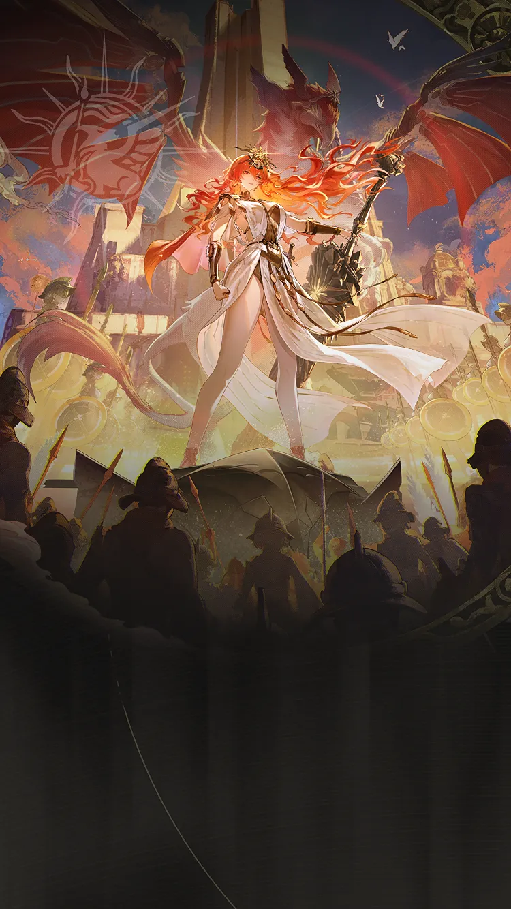
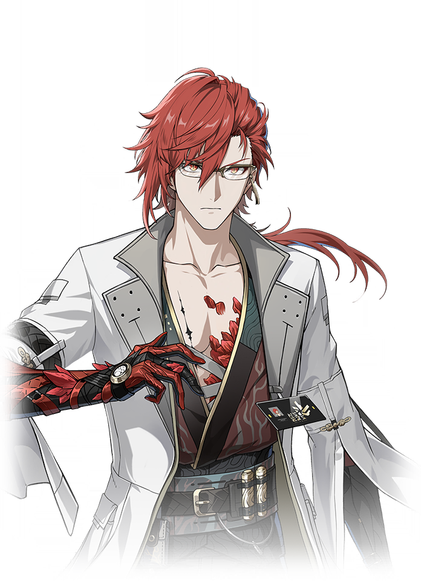

Wuthering Waves Resonator guide
Augusta build, teams, weapons, and Echoes
Premium Electro carry that wants Heavy Attack/all-attribute support.
Personal notes
Optional profile-aware info that keeps the main guide unchanged.
No profile connected on this browser yet.
Log in above to load an existing WaveKit profile, or use the team helper to mark your Resonators and weapons for Augusta.
Skill priority
Team compositions
 Main damageAugustaLeads the damage plan
Main damageAugustaLeads the damage plan Setup helperIunoSets up the damage dealer
Setup helperIunoSets up the damage dealer Support slotShorekeeperCompletes the team
Support slotShorekeeperCompletes the teamIuno is Augusta's strongest focused Heavy Attack helper, while Shorekeeper or Verina completes the team with universal sustain.
Main damageAugustaLeads the damage plan
Setup helperMortefiSets up the damage dealerSupport slotShorekeeperCompletes the teamMortefi is a strong Heavy Attack amplifier for Augusta. Add a universal healer to keep her field time stable.
Main damageAugustaLeads the damage plan Setup helperRebeccaSets up the damage dealerSupport slotShorekeeperCompletes the team
Setup helperRebeccaSets up the damage dealerSupport slotShorekeeperCompletes the teamRebecca is a strong Heavy Attack alternative when Iuno is unavailable, with the final slot covering sustain.
Use these grouped options to understand the wider roster around the complete teams above.


These characters appear in reviewed teams, but every possible combination is not guaranteed. Use the complete teams above as the safest starting point.
New player reading guide
If you are only checking Augusta before selecting your Resonators, read the best team as a target, not a requirement. Missing Iuno or Shorekeeper is normal; the team helper can turn your owned roster into a practical substitute.
Augusta guide overview
Augusta is an Electro Main DPS in Wuthering Waves. Its recommended build starts with Thunderflare Dominion, while its Echo plan uses Crown of Valor, Void Thunder. The guide also covers stat priorities, compatible teammates, and a practical rotation.
Quick build
- Role
- Main DPS
- Team type
- Heavy Attack Carry
- Best weapon
- Thunderflare Dominion
- Alternate weapons
- Verdant Summit / Ages of Harvest / Aureate Zenith
- Sonata
- Crown of Valor, Void Thunder
- Echo cost
- 4-3-3-1-1
- Main Echo
- The False Sovereign
- Main stats
- Crit DMG or CRIT Rate / Electro DMG or ATK% / ATK%
Stat priority
- Priority 1: Energy Regen until satisfied, for reliable Liberation uptime
- Priority 2: CRIT Rate and CRIT DMG
- Priority 3: ATK% and Heavy Attack DMG Bonus
- Priority 4: Resonance Skill DMG Bonus
Resonance Chain overview
Each Resonance Chain level comes from duplicate copies of this Resonator. Expand a level for the exact in-game effect and use the short line for a quick read.
Chain effects
R1Stained in Scorched Earth- Each stack of Crown of Wills additionally increases Augusta's Crit.…+
- Each stack of Crown of Wills additionally increases Augusta's Crit. DMG by 15%.
- The max stack of Crown of Wills is increased to 2.
- Casting Intro Skill - Stride of Goldenflare now grants 1 stacks of Crown of Wills.
- Resonance Skill - Undying Sunlight: Strike, Resonance Skill - Undying Sunlight: Leap, and Resonance Skill - Undying Sunlight: Plunge are now immune to interruption.
R2Cleansed in Crimson War- Crown of Wills provides additional effects: Each stack increases Augusta's Crit.…+
- Crown of Wills provides additional effects: Each stack increases Augusta's Crit. Rate by 20%.
- For every 1% of Crit. Rate over 100%, Augusta gains 2% Crit. DMG increase, up to 100%.
R3Forged in Rot and RuinThe following skills have their DMG Multiplier increased by 25%: - Heavy Attack - Thunderoar: Backstep, Dodge Counter - Thunderoar: Backstep, Heavy Attack - Thunderoar: Spinslash, Heavy Attack - Thunderoar: Upp…+
The following skills have their DMG Multiplier increased by 25%:
- Heavy Attack - Thunderoar: Backstep, Dodge Counter - Thunderoar: Backstep, Heavy Attack - Thunderoar: Spinslash, Heavy Attack - Thunderoar: Uppercut.
- Resonance Skill - Undying Sunlight: Plunge.
- Resonance Liberation - Sublime is the Sun: Sunborne, Resonance Liberation - Sublime is the Sun: Everbright Protector.
R4Ascent in Sun and GloryCasting Intro Skill - Stride of Goldenflare increases the ATK of all Resonators in the team by 20% for 30s.+
Casting Intro Skill - Stride of Goldenflare increases the ATK of all Resonators in the team by 20% for 30s.
R5Unshaken in Wrathful TidesThe Shield provided by Inherent Skill - Glory's Favor is increased by 50%.+
The Shield provided by Inherent Skill - Glory's Favor is increased by 50%.
R6Engraved in Radiant Light- Augusta can now hold up to 4 stacks of Crown of Wills.…+
- Augusta can now hold up to 4 stacks of Crown of Wills.
- For every 1% of Crit. Rate over 150%, Augusta gains 2% Crit. DMG increase, up to 50%.
- When Augusta performs Heavy Attack - Thunderoar: Spinslash or Heavy Attack - Thunderoar: Uppercut, she obtains 2 stack of Crown of Wills. Augusta can only obtain 2 stacks of Crown of Wills every 1s via Engraved in Radiant Light.
- While casting Heavy Attack - Thunderoar: Spinslash or Heavy Attack - Thunderoar: Uppercut, Thunder Rage is triggered at the spot, dealing two instances of Electro DMG, with each instance equal to 100% of Augusta's ATK, considered as Heavy Attack DMG.
Effect names, numbers, and conditions follow current public game-data records. WaveKit keeps the full wording available so important conditions are not lost in a tier label.
Simple play pattern
- Set up both teammates before giving Augusta the main damage window.
- Use the listed Sonata and main Echo as the first build target, then improve substats slowly.
- If the team feels stressful, use the helper to choose a real healer or safer third slot.
Build priority
- Difficulty
- Moderate
- Safety
- Bring a healer if learning
- Data note
- Guide checked
Augusta is treated as a high-priority carry path in WaveKit when you own their core partners or weapon.
Augusta FAQ
What is the best Augusta build in Wuthering Waves?
Augusta's recommended WaveKit setup is Electro DPS, using Thunderflare Dominion, Crown of Valor, Void Thunder, and The False Sovereign as the main Echo target.
What stats should Augusta use?
Start with Crit DMG or CRIT Rate / Electro DMG or ATK% / ATK%. If the rotation feels uncomfortable, improve Energy Regen or defensive comfort before chasing perfect substats.
What teams work with Augusta?
A recommended team is Augusta / Iuno / Shorekeeper. WaveKit can also suggest owned alternatives through the team helper.
Is Augusta beginner friendly?
Augusta's current difficulty is listed as Moderate. If you are learning, pair them with safer sustain or defensive support.